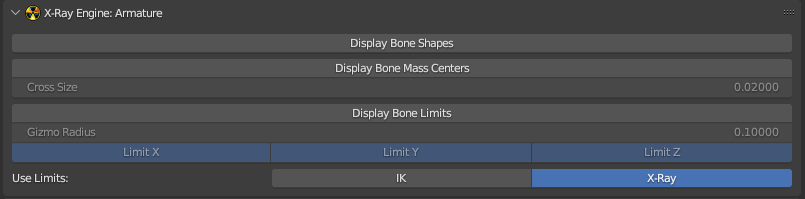

X-Ray Engine: Armature

About
This page describes the X-Ray Engine: Armature panel, which stores armature parameters. All parameters from this panel are used only inside the blender and are not read/written from/to files during import/export
Location
Properties window > Data tab of the armature
Parameters
Display Bone Shapes
Display bone shapes of the current armature in viewport
Display Bone Mass Centers
Display the centers of mass of bones in viewport
Cross Size
Size of crosshairs for displaying centers of masses in viewport
Display Bone Limits
Display bone limits.
Limits have bones with Joint, Slider, and Wheel types.
Gizmo limits are different for all of these types of Gizmo. Colors of limits are different for different axes:
- Red - X-axis
- Green - Y-axis
- Blue - Z axis
The boundaries of the minimum limits have a darker color than the boundaries of the maximum limits (for the maximum limit on the X-axis the arc color is red, and for the minimum limit the arc color is dark red, etc.)
For Joint bones, the rotation limits for all axes are displayed as arcs.
For Slider bones, two limits are displayed:
- Z-axis rotation limit - Arc
- Z-axis displacement limit - Line
For Wheel bones, one X-axis rotation limit is displayed as an arc.
Dots are displayed on each arc of the rotation limit to indicate the current rotation.
Gizmo Radius
Gizmo radius for bone limits
Limit X, Limit Y, Limit Z
Display limits for X, Y, Z axes. If Limit X/Limit Y/Limit Z is disabled, the X/Y/Z axis limits will not be displayed in the viewport.
Use Limits
This parameter specifies which bone limit values to use
-
X-Ray - Limit values will be taken from the X-Ray Engine: Bone panel.
-
For Joint bones will be used parameters Limit X: Min, Limit X: Max, Limit Y: Min, Limit Y: Max, Limit Z: Min, Limit Z: Max.
-
For Wheel bones will be used parameters Steer: Min, Steer: Max.
-
For Slider bones will be used parameters - Slide Z: Min, Slide Z: Max, Rotate Z: Min, Rotate Z: Max.
-
-
IK - The limit values will be taken from the standard Properties > Bone > Inverse Kinematics panel, which is available in Pose Mode. Parameters will be used Limit X: Min, Limit X: Max, Limit Y: Min, Limit Y: Max, Limit Z: Min, Limit Z: Max. Used for outdated blend files that are saved using an addon version earlier than v0.7.0.